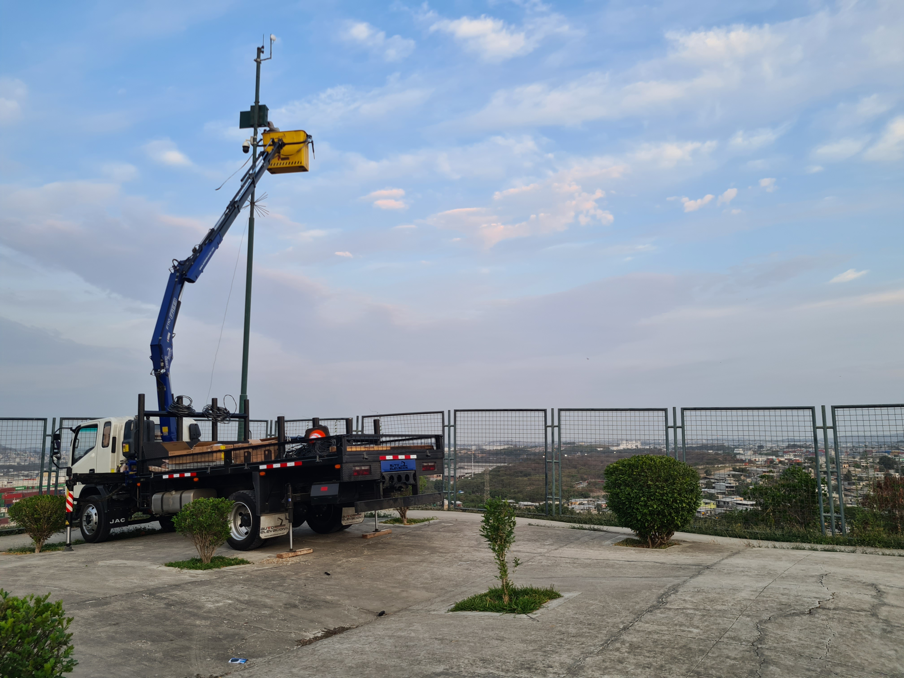
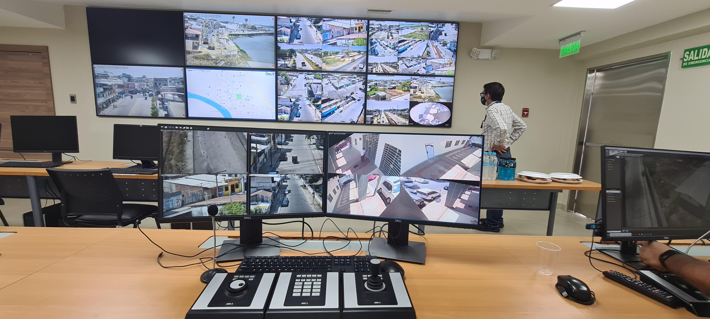
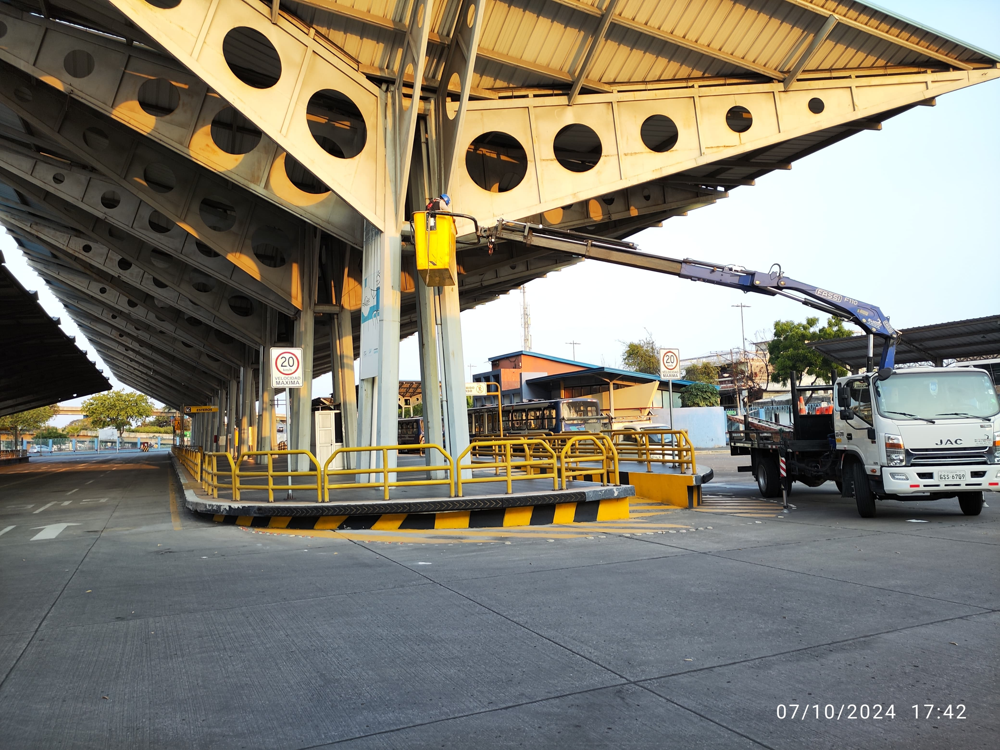
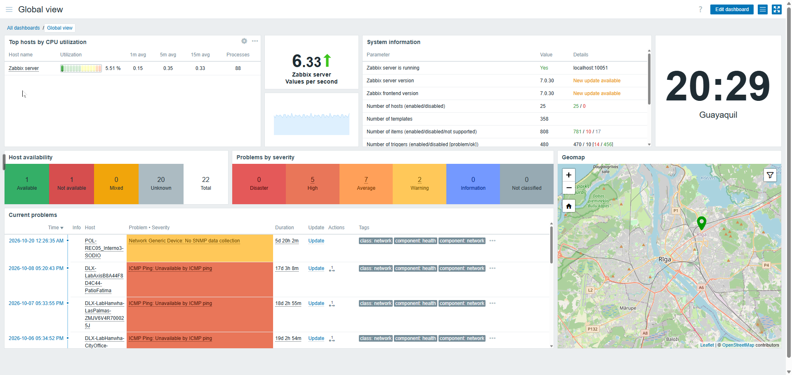
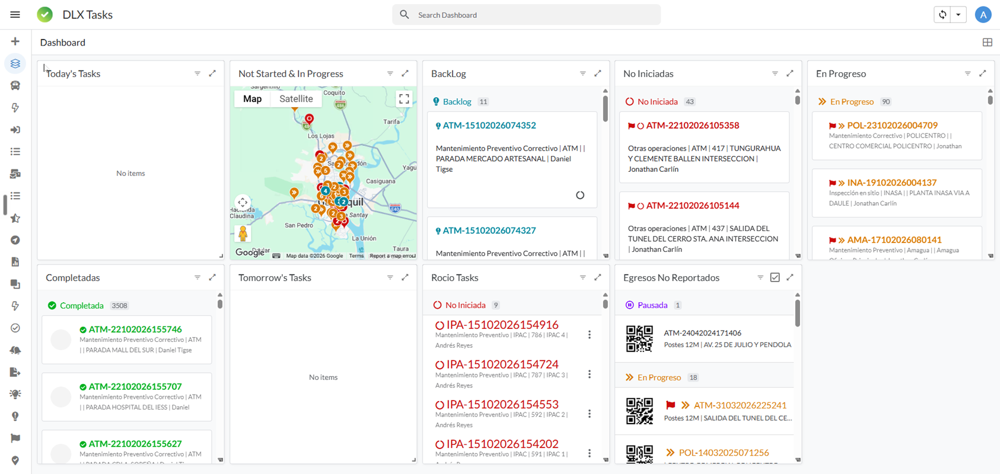
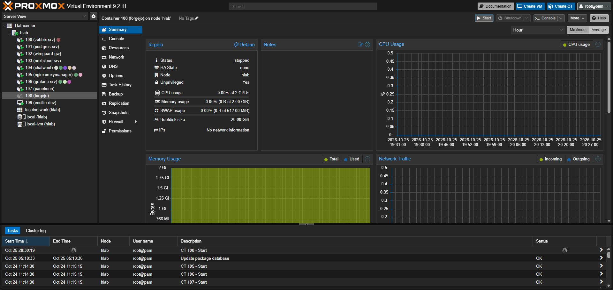

Cámaras Ojo de Águila
Participé en la instalación de más de 600 cámaras Ojo de Águila en la ciudad de Guayaquil, desde el montaje en sitio hasta la conexión y puesta en marcha de cada punto.
Estudiante de Ingeniería en Sistemas Inteligentes
Hola, soy Andrés. Tengo más de 13 años trabajando en proyectos de tecnología: redes, servidores, seguridad electrónica y sistemas BMS. Estudio Ingeniería en Sistemas Inteligentes y en este portafolio muestro un poco de lo que he hecho y de lo que sigo aprendiendo.

Soy tecnólogo en Redes y Telecomunicaciones por el Tecnológico Espíritu Santo. También estudié en BYU-Idaho y ahora curso Ingeniería en Sistemas Inteligentes en la Universidad ECOTEC.
Desde hace más de 13 años trabajo en una empresa integradora de tecnología. He participado en proyectos de redes, servidores, videovigilancia, control de acceso y sistemas BMS, y hoy coordino proyectos y un equipo técnico en campo.
Me interesa la automatización y crear mis propias aplicaciones para resolver problemas del trabajo diario. Mi objetivo es unir mi experiencia en infraestructura con el desarrollo de software.
Configuración de routers, switches y firewalls.
Cámaras, grabadores y control de acceso.
Instalación y mantenimiento de servidores y máquinas virtuales.
Integración y monitoreo de sistemas de edificios.
Estructura y diseño de páginas web.
Control de versiones de mis proyectos.

Participé en la instalación de más de 600 cámaras Ojo de Águila en la ciudad de Guayaquil, desde el montaje en sitio hasta la conexión y puesta en marcha de cada punto.

Hice el despliegue de la central de monitoreo del Centro de Operaciones de Daule: pantallas, estaciones de trabajo, red y conexión con las cámaras del cantón.

Instalé y administro el sistema de videovigilancia de la Metrovía y otras cámaras de la Agencia de Tránsito y Movilidad de Guayaquil. Es un sistema crítico que debe funcionar todo el día.

Configuré Zabbix para revisar servidores, grabadores y cámaras de la ciudad y de otros clientes. Las alertas llegan por Telegram y el estado de los equipos se ve en paneles de Grafana.
Conoce Zabbix
Desarrollé aplicaciones en AppSheet, una plataforma low-code, para crear y asignar tareas de campo, registrar fotos y materiales usados y llevar el inventario de bodega.
Conoce AppSheet
Configuré una infraestructura con Proxmox para crear contenedores con distintas aplicaciones: monitoreo de equipos, bases de datos y pruebas para desplegar mis propias soluciones.
Conoce ProxmoxSi quieres escribirme, llena este formulario.